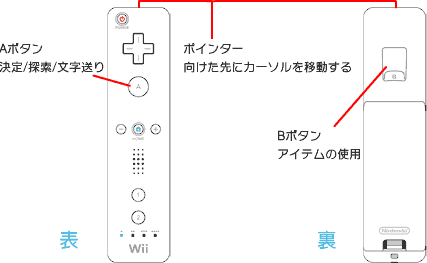

コントローラの基本操作
ポイントする
Wiiリモコンで画面の特定の場所を指し示す操作を「ポイントする」と言います。
振る
Wiiリモコンを上下左右に動かす操作を「振る」と言います。
持つ・つかむ
画面の特定の場所をポイントし、ボタンを押したまま動かす操作を「持つ」または「つかむ」と言います。
押す・引く
Wiiリモコンを画面に近づけたり、遠ざけたりする操作を「押す」「引く」と言います。
ひねる
手首や腕全体を使って、Wiiリモコンを傾ける操作を「ひねる」と言います。